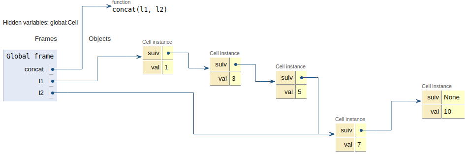
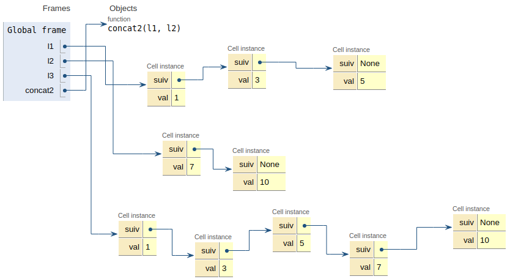

Exercices¶
Concaténer deux listes chainées¶
On reprend la structure de liste chainée vue en cours, avec des cellules.
class Cell:
""" Une classe pour les listes chainées"""
def __init__(self, v, s):
self.val = v
self.suiv = s
L’objectif de cet exercice est de coder une fonction permettant de concaténer (mettre bout à bout) deux listes.
Solution autorisant les effets de bords¶
Soient deux listes chainées l1 et l2.
l1 = Cell(1, Cell(3, Cell(5, None)))
l2 = Cell(7, Cell(10, None))
Une première idée pour résoudre le problème posé est de trouver la dernière cellule de l1 et de la chaîner à l2.
Compléter la fonction
dernierci-après de manière à renvoyer la dernière cellule d’une listelpassée en paramètre. Tester votre code.
def dernier(l):
""" renvoie la dernière cellule de l"""
assert l is not None
cellule_courante = l
# A compléter avec votre code
#
return cellule_courante
# Cellule de tests - A décommenter et EXECUTER !
#assert dernier(l1).val == 5
#assert dernier(l2).val == 10
Coder une fonction
concatqui prend en paramètres deux listesl1etl2et qui procède à leur concaténation. La fonction ne renvoie rien.
def concat(l1, l2):
""" renvoie la concaténation de l1 et l2"""
# Supprimer l'instruction 'pass' et compléter avec votre code.
pass
concat(l1, l2)
# Cellule de tests - A décommenter et EXECUTER
#assert l1.val == 1
#assert dernier(l1).val == 5
Quel(s) est(sont) le(s) problème(s) avec cette façon de procéder ? En cas de difficulté, penser à utiliser pythontutor en vue d’obtenir un résultat proche de la figure suivante.

Structure interdisant les effets de bords non souhaités¶
Afin d’éviter les problèmes identifiés précédémment, on choisit de travailler sur des copies des listes passées en paramètre. Le code d’une fonction copie est donnée ci-dessous.
Commentez ce code
def copie_rec(l):
""" construit récursivement une nouvelle liste qui est la copie de l,
et la renvoie."""
if l is None:
return None
else:
return Cell(l.val, copie_rec(l.suiv))
# Commentaires
Coder une fonction concat2 qui prend deux listes l1 et l2 en paramètres et qui renvoie une nouvelle liste résultant de la concaténation de l1 et l2.

def concat2(l1, l2):
# A compléter
pass
# TESTS - A décommenter et EXECUTER
#l1 = Cell(1, Cell(3, Cell(5, None)))
#l2 = Cell(7, Cell(10, None))
#l3 = concat2(l1, l2)
#
#assert l3.val == l1.val
#assert dernier(l3).val == dernier(l2).val
#assert l3 is not l1
Création d’une classe Pile avec une liste chaînée¶
L’interface de la structure de données Pile comporte (rappels !) les opérations suivantes:
est_pile_vide;
empiler;
dépiler;
On se propose de donner une réalisation possible à base de cellules, en adoptant le paradigme objet.
class Cell:
""" Une classe pour les listes chainées"""
def __init__(self, v, s):
self.val = v
self.suiv = s
On crée une classe Pile qui sera initialisée à None (pile vide). Compléter les méthodes de cette classe.
class Pile:
""" Une classe pile à base de liste chaînée"""
def __init__(self):
self.tete = None
def est_pile_vide(self):
pass
def empiler(self, x):
pass
def depiler(self):
assert not self.est_pile_vide()
# A compléter
# TESTS - A décommenter et EXECUTER
#p = Pile()
#p.empiler(10)
#p.empiler(20)
#p.empiler(5)
#
#assert p.tete.val == 5
#assert p.tete.suiv.val == 20
#
#p.depiler()
#assert p.tete.val == 20